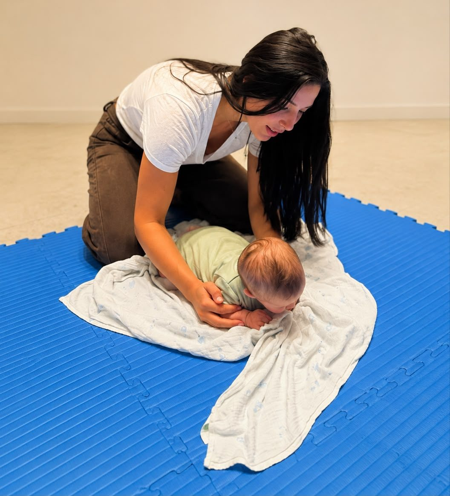
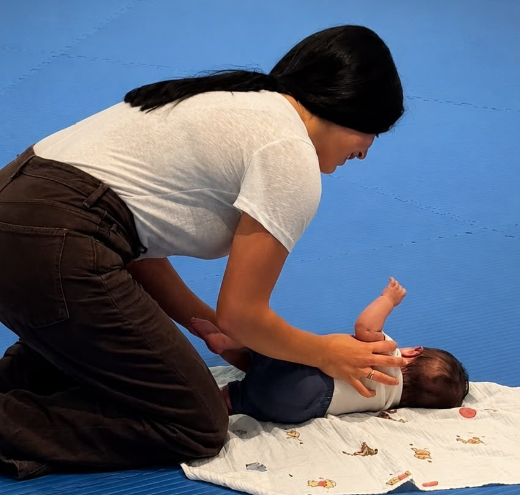
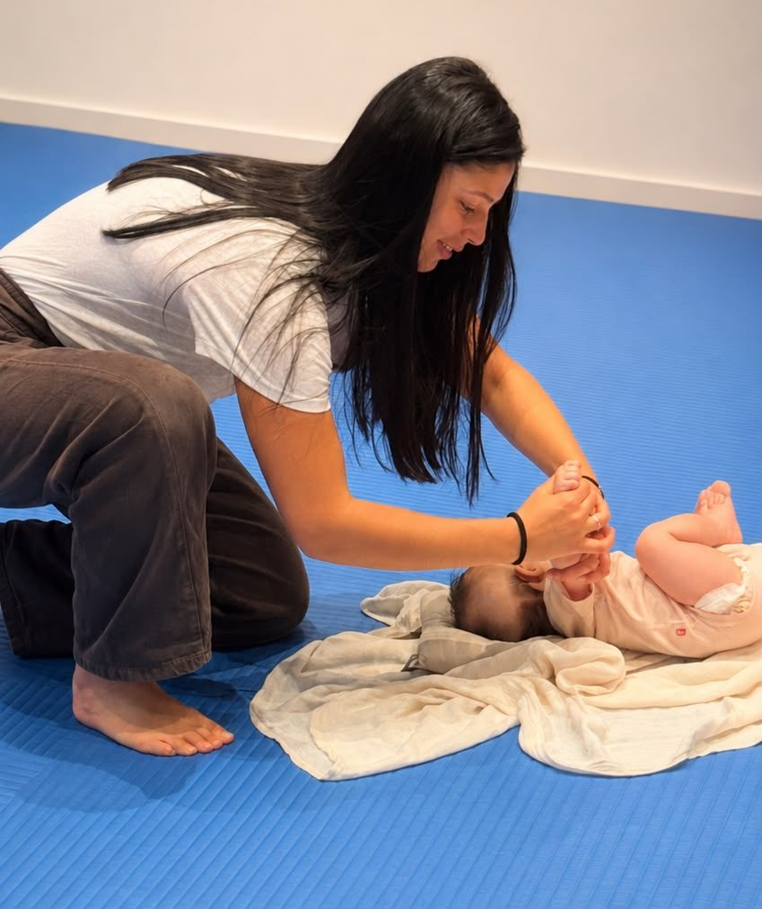
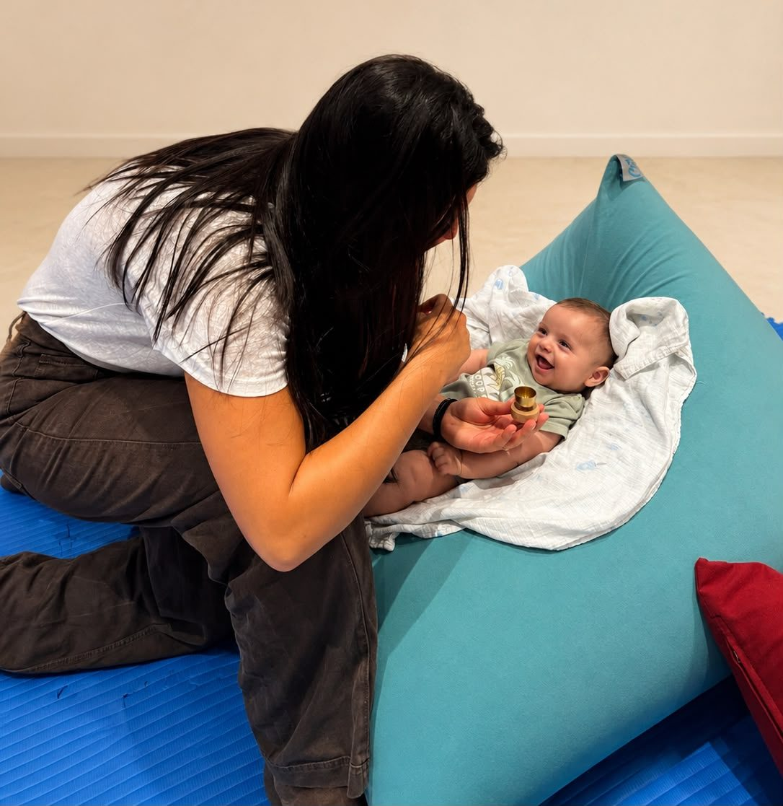
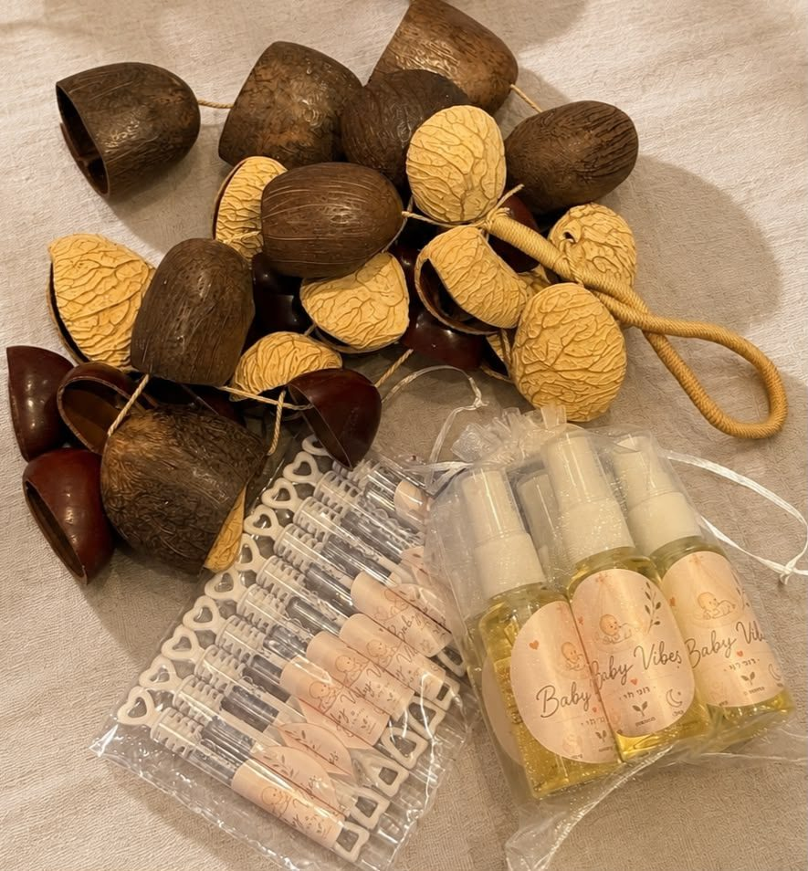

- מגע, תנועה והנדלינג נכון — היכרות
- תרגול של זמן בטן — התארגנות על הבטן
- סימטריה, שכיבה על הצד והעדפת צד
- התינוק כחוקר קטן — משחק וקשר עין־יד
- התפתחות בשגרה ותחושת ביטחון בתנועה
מה אני מציעה
ליווי לגיל הרך — אישי ומותאם לתינוק/ת
אני רואה כל תינוק כעצמו — לא לפי לוח זמנים שמתאים לכולם, אלא לפי הסימנים שלו: מה שהוא יכול, מה שהוא רוצה ומה שהוא צריך. במרכז עומדים ליווי התפתחותי ועיסוי תינוקות, ולצידם ייעוץ שינה כתחום משלים.
קודם מתבוננים, אחר כך עוזרים
לא מזרזים ולא משווים
מאפשרים, לא "מלמדים"
לפי התינוק — לא שיטה אחת לכולם
התחום המרכזי שלי
ליווי התפתחותי — סדנאות לפי גיל
את הליווי ההתפתחותי אני מעבירה בסדנאות לפי גיל, כל אחת ברצף מפגשים שבועיים. לא מזרזים התפתחות ולא משווים בין תינוקות — יוצרים הזדמנויות ומאפשרים לגוף של התינוק להיות מוכן, בקצב שלו, עם כלים פשוטים ליישום בבית.
- הדרך להתהפכות — מתחילה הרבה לפני
- "אני רוצה להגיע" — מוטיבציה לתנועה
- הדרך לזחילת גחון
- התינוק כחוקר קטן — חושים וסקרנות
- התפתחות בשגרה ושיווי משקל
- הדרך לעצמאות — מעברים וישיבה
- אתגר מותאם — הדרך ללמידה
- בניית המוח דרך משחק
- ביטחון בתנועה — טיפוס וירידה בטוחה
- כל רגע הוא הזדמנות להתפתחות




סדנת עיסוי תינוקות
מגע רך הוא אחת הדרכים היפות לחיזוק הקשר עם התינוק/ת. בסדנה לומדים יחד רצף מגע מלא ובטוח — שמרגיע, מקל על גזים ואי-נוחות ותורם לשינה טובה יותר. תמיד בקצב של התינוק, מתוך הקשבה ולא לפי "ביצוע". הסדנה בנויה מ-4 מפגשים:
- ידיים, רגליים וכפות הידיים והרגליים
- בטן והקלה על גזים
- חזה וגב
- פנים והקלה בבקיעת שיניים

ייעוץ שינה · תחום משלים
לצד הליווי ההתפתחותי, יש לי תעודה וידע מקצועי גם בעולם השינה. הגישה כאן זהה — מותאמת לתינוק שלכם, לא שיטה אחת שמתאימה לכולם. נבנה יחד שגרה רגועה ונעימה, בעדינות ובקצב שמתאים למשפחה, כחלק מהמבט השלם על התינוק.
איך מתחילים
הדרך שלנו יחד
שיחת היכרות
שיחה קצרה וללא התחייבות — נכיר את המשפחה ונבין מה הכי חשוב לכם כרגע.
בחירת הליווי
נבחר יחד את הסדנה או הליווי שמתאים לגיל, לאופי ולשגרה של התינוק/ת שלכם.
ליווי ותמיכה
נתקדם יחד עם כלים פשוטים ליישום בבית, ואני זמינה לשאלות לאורך הדרך.
לא בטוחים מאיפה להתחיל?
ספרו לי בן כמה התינוק/ת ומה קורה אצלכם בבית — ונבין יחד מה הסדנה או הליווי שהכי מתאימים לכם.